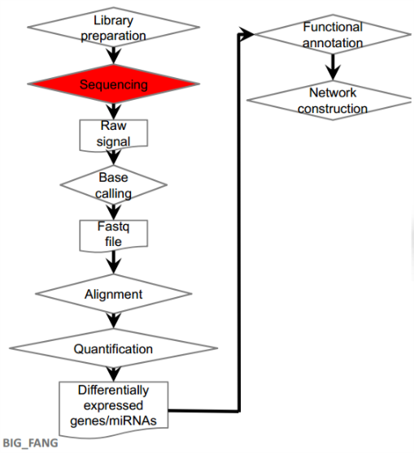
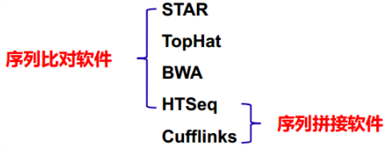

基于高通量测序平台的表观遗传学技术
- Methyl-Seq
- DNA的甲基化图谱
- DNase I-Seq
- 全基因组染色质DNA的开放程度、非基因编码区的调控元件的分布
- ChIP-Seq
- 重要转录因子以及组蛋白在染色质DNA上的结合、分布状态
- 3C-Seq
- 染色质的空间结构
- mRNA-Seq
- 以细胞为单元的转录本、重要转录因子和信号转导分子的表达水平
- ncRNA-Seq
- 非编码RNA的表达水平
RNA-Seq
RNA-Seq利用高通量的测序技术来检测组织或细胞在特定状态中所有的转录产物
- Genes
- Expression
- Alternative splices
- Nucleotide variations
- Fusions
- Noncoding RNA
- snoRNA
- mRNA-like ncRNA
- snRNA
- Antisense transcripts
- pesudogenes
- Retrotransposon
- Others functional RNAs
RNA-Seq protocol


-
文库准备
- Ribo-minus RNA-Seq
- cDNA Library for RNA‐Seq
- 测序
- 从测序仪得到原始的光信号
-
Base calling将光信号解读为序列文件
Fastq format file
Single end / Paired-end
- Bioinformatics pipelines for transcriptomic analysis.（用于转录组学分析的生物信息学管道）
常规RNA-Seq分析流程以及涉及的主要分析工具
干细胞血液分化的系统组学研究
血液细胞生理功能重要；谱系分化和发育阶段清晰；细胞来源丰富、临床病种繁多。
干细胞的系统组学与转化医学研究
利用转录组学测序数据挖掘分析融合基因
具有调控作用的非编码RNA（Non-coding RNA）
RNAi
lncRNA转录组学分析与应用
-
LncRNA的基础概念
LncRNA（long noncoding RNA）是长度大于200 nt的不具有编码潜能的RNA
lncRNA分类
- Intergenic lncRNA，位于基因间区
- Intronic lncRNA，位于内含子区
- Sense lncRNA，位于编码基因的有义链，也包含一些该基因的外显子，甚至与编码基因的序列重叠
- Antisense lncRNA，位于编码基因的反义链，与基因的外显子/内含子区有重叠，或覆盖整个编码区
-
lncRNA的一般调控机制
LncRNA的转录涉及染色质结构改变，影响转录因子结合状态
LncRNA作为增强子调控下游编码基因的转录
lncRNA结合miRNA干扰其对靶基因的调控
-
lncRNA表达谱的分析方法
Ribo-minus优于polyA建库方法
LncRNA、 mRNA-like RNA和snoRNA等一些非编码RNA不含有polyA
Ribo-minus建库方法下进行RNA-seq测序，分析得到未注释的转录本大多为lncRNA
LncRNA数据处理

过滤转录本条件：
- 转录本长度 ≥ 200 nt
- 转录本不曾被注释为mRNA、miRNA、rRNA等
编码潜能预测
- CPAT
- HMM/Pfam_Scan
- CPC
- PhyloCSF
- BLASTX
-
LncRNA的相关数据库介绍
-
红系分化中RNA的整合分析
红系发育细胞分选策略
mRNA、miRNA和lncRNA表达量比较
mRNA和miRNA表达量分布相似（A）
LncRNA表达量较低（B）
脱核的红细胞中也含有RNA
mRNA、miRNA和lncRNA表达谱比较
编码基因在红系发育初期（HSC-P2）和晚期（P5-RBC）的表达差异显著
非编码RNA表现出更强的分化阶段特异性
LncRNA具有分化阶段特异性
只在某一个分化阶段表达的lncRNA数目最多
LncRNA具有更强的分化阶段特异性
编码基因表达趋势分析
用ConsensusClusterPlus软件包对所有差异表达基因进行非监督K-means聚类
累积分布函数(CDF)（A）给出不同分类个数k下的一致性指数的累积概率
Delta面积图（B）展示k和k-1之间CDF曲线下的面积的相对变化
miRNA-mRNA整合分析
整合mirSystem数据库中miRNA和靶基因作用关系，并计算RNA表达量的皮尔森相关性，鉴定潜在的miRNA-gene作用对
4个miRNA与35个基因之间呈现强负相关关系提示miRNA参与调控核苷酸结合以及DNA损伤应答
LncRNA-mRNA整合分析
LncRNA潜在调控了造血、 DNA修复相关基因的表达
潜在的lncRNA顺式调控转录作用
Novel lncRNA的预测
新的lncRNA与基因的表达呈现强相关
ceRNA的预测
miRNA和lncRNA存在内源性竞争关系。通过竞争结合在mRNA序列来干扰miRNA与靶基因结合的lncRNA称为ceRNA (competing endogenous RNA）
由于lncRNA和miRNA能够结合在同样的序列上，首先通过BLAST分析计算lncRNA和miRNA之间存在至少8个碱基的序列匹配，之后与DIANA数据库验证我们的结果，发现潜在的ceRNA
红系发育中的RNA分子网络
编码基因、 miRNA和lncRNA通过复杂的调控关系参与红细胞成熟过程
LncRNA与转录因子/染色质复合物
lncRNA作用机制多样，除了与蛋白质、 microRNA相互作用外，也可以招募或调控转录因子和染色质复合物
LncRNA的动态表达谱
转录因子与核心基因的鉴定
红系分化中相邻阶段差异peaks转录因子的富集
权重基因共表达网络中筛选到的阶段特异的核心基因
LncRNA‐TFs‐Genes相互作用网络
PCED1B-AS1 受CEBPB 和 GATA1转录因子调控可能参与调控 ALAS2 、 HBG2 、 RPA2等基因的表达
转录组测序技术的发展趋势
- Technology Advancement
- Single cell RNA-Seq
- Future Directions
- Data integration
- eQTL and GWAS
- Transcriptomics & Genomics & Epigenomics & Proteomics
单细胞RNA-Seq
自闭症患者脑单细胞转录组测序研究
后基因组时代的生物大数据集成
国际大型生命组学研究计划
基因表达的多维调控
基因表达受到碱基水平、核酸分子水平、蛋白质水平等多维调控。疏松状态染色质中的DHS可以富集转录因子和重要酶类。染色质的开放程度与DHS的CpG岛甲基化及组蛋白修饰密切相关。转录因子通过结合DNA序列特定位点来改变启动子活性, 进而增强或抑制基因表达。染色质通过“成环”机制使得远距离的调控序列实现转录调控。SNPs通过改变基因的转录区、DHSs或调控区的DNA序列来改变转录因子的结合状态从而影响基因表达
生物大数据的标准化与系统整合
现有的组学数据主要包括：基因组（CNV、 SNPs、 QTLs），转录组（mRNA、microRNA、 LncRNA、 Gene fusion、 Alternative splicing）和表观组（DNS、Methylation、 Histone modification）
对多组学多因子数据进行标准化，然后运用仿真和模拟等手段筛选最佳靶点
生物大数据的降维分析 (Dimension Reduction)
对于TCGA中544个卵巢癌病人4种组学数据52129个属性，通过单变量Cox模型初步筛选出与生存时间相关的4526个变量。然后通过贝叶斯信息准则(BIC)和无监督的K聚类两种方法均获得7个亚型，横向得到37个clusters。然后，在这37个clusters里面的最显著的18个clusters中选出2个最具代表性的属性(一共36个属性)，分类效果也非常好，而且指标还原成了CNV、基因表达等等，最后确定了对应亚型特异的属性
生物大数据的聚类与功能注释
“聚类”是从大数据中发掘价值的普遍性、基础性问题。聚类分析的目标是依据数据本身的分布特征（无监督），把整个数据划分成不同的类。基本的准则是同类的数据应该具有某种相似性，而异类的数据应该具有某种差异性
- 差异基因层次聚类 (Hierarchical Clustering)
- 基因本体聚类分析 (Gene Ontology)
- 信号通路富集与功能注释 (KEGG)
- 基于模糊聚类的Bayes网络
标准化的生物信息学分析软件和流程
整合分析多组学数据注释疾病相关位点
数据应用的不同层次
- 简单数据的简单分析：传统的数据库统计研究
- 简单数据的复杂分析：传统数据量的数据挖掘
- 复杂数据的简单分析
- 复杂数据的复杂分析
基于价值发掘的数据应用集中第一、二阶段
下围棋的“AlphaGo”和下象棋的“DeepBlue”属于简单数据的复杂分析，是单一领域的机器学习
课后作业和问题思考
-
请简述转录组测序的基本实验流程
-
文库准备
- Ribo-minus RNA-Seq
- cDNA Library for RNA‐Seq
- 测序
- 从测序仪得到原始的光信号
-
Base calling将光信号解读为序列文件
Fastq format file
Single end / Paired-end
- Bioinformatics pipelines for transcriptomic analysis.（用于转录组学分析的生物信息学管道）
常规RNA-Seq分析流程以及涉及的主要分析工具
-
请简述转录组数据分析的主要内容
- Alignment 序列比对
- Quantification 定量
- Differential expression 差异表达
- Functional annotation 功能注释
- Network construction 网络构建
-
表观遗传学在你工作中可能有哪些应用